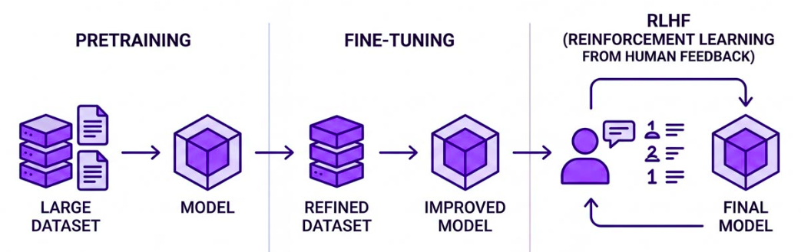
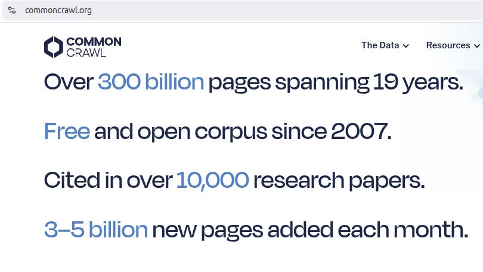
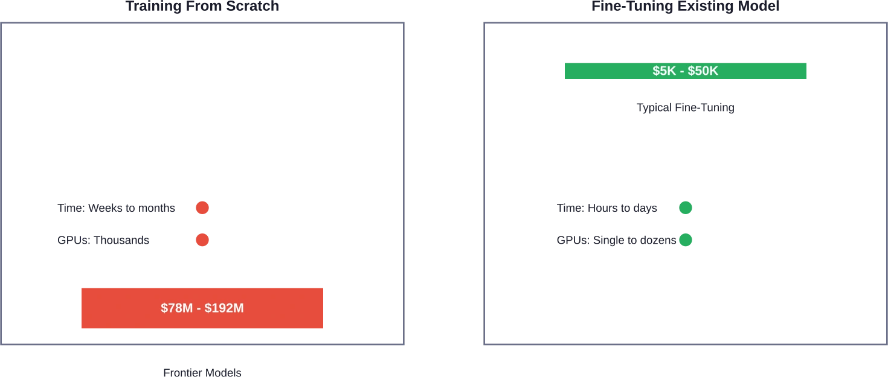

We want models that are:
To get there, we need to answer four design questions:
Tom Mitchell’s definition is our framework for understanding LLMs:
Note
Machine learning: A computer program is said to learn from experience \(E\) with respect to some class of tasks \(T\) and performance measure \(P\), if its performance at tasks in \(T\), as measured by \(P\), improves with experience \(E\).
If more data improves quality, the system is learning (a.k.a. training or fitting).
For instance, in spam filtering, we have:
Training a useful assistant model from scratch usually looks like:

Each stage solves a different problem, so each creates a different kind of model.

Pre-training consumes internet-scale text corpora.
What do you get?
What is still missing?
Typical examples:
Google’s BIG-bench (contains 214 tasks) gives a sense of the diversity of instruction-style tasks.
Example task families include:
Mitchell’s variables show up clearly here:
LLMs does not magically become better with more data. Instead, tasks need to be explicitly targeted, with some transfer to nearby tasks.
Even after instruction tuning, a model can still be:
This is because the internet contains everything, including harmful and unhelpful content. So instruction following is necessary, but not sufficient.
Alignment is often discussed as RLHF (Reinforcement Learning from Human Feedback):
Outcome: ChatGPT; a conversational assistant that learned what humans like.
Frontier training means months of large GPU clusters:
The compute bill alone can reach the tens or hundreds of millions of dollars.

Fine-tuning reuses prior knowledge instead of paying the full cost again.
Most teams should not train foundation models from scratch.
Instead, they start from an existing pretrained model and adapt it:
Transfer learning means reusing a trained foundation model for a new but related problem.
Why it matters:
This is the default path for almost every applied team.
Fine-tuning means adapting a pre-trained model on a more specific dataset.
Before adapting a model, choose the best starting point.
Different leaderboards answer different questions:
There is no universal “best model”. The right model depends on:
If you want a rough estimate of training time or budget, LLM Training Time and Cost Calculator and Spheron’s training cost calculator are useful starting points.
Supervised Fine-tuning (SFT) continues training a pretrained model on a smaller task-specific dataset.
See the Transformers SFT guide.
Parameter-efficient fine-tuning (PEFT) updates only a small set of extra parameters.
The most common approach is LoRA:
This is why it is possible to fine-tune an \(8B\) model on one strong GPU (Colab T4 GPU).
PEFT changes the economics of customization:
Operationally, adapters are easier to ship than fully retrained model weights.
For implementation details, see the Transformers PEFT guide.
For open-weight model training, common toolchains include:
Practical starting points:
Rented GPUs can be used to fine-tune models without owning a cluster.
Common pattern:
This makes experimentation feasible even for small teams.
Examples: